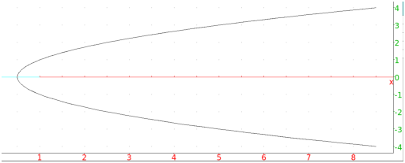
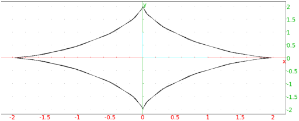
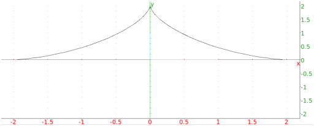

13.18.1 Loci: locus
The locus command draws the locus of points determined by
geometric objects moving in the plane, where the object depends on a
point moving along a curve. It can draw a locus of points which
depends on points on a curve, or the envelope of a family of lines
depending on points on a curve.
The locus of points depending on points on a curve.
For drawing the locus of points depending on points on a curve:
-
locus takes two mandatory arguments and
two optional arguments:
-
var1, a variable name which has already been
assigned to a point, which itself is a function of
var2, the second argument.
- var2, a variable name which is assigned to
element(C) for some curve C (see
Section 13.6.15).
- Optionally, t=a..b, where t is the parameter of the
curve C. (You can double check the name of the parameter for a
curve C with the command parameq(C).)
- Optionally, tstep=s, to set the step size for the
parameter t.
- locus(var1,var2 ⟨tstep=c⟩)
draws the locus of points formed by var1, as
var2 traces over the curve C.
With the optional arguments, C is limited to the part
parameterized from a to b, with a step size of c.
Examples
The envelope of a family of lines which depend on points on a curve.
For drawing the envelope of a family of lines which depend on points
on a curve:
-
locus takes two mandatory arguments and
two optional arguments.
-
var1, a variable name which has already been
assigned to a line, which itself is a function of var2,
the second argument.
- var2, a variable name which has already been
assigned to element(C) for some curve C (see
Section 13.6.15).
- Optionally, t=a..b, where t is the parameter of the
curve C. (You can double check the name of the parameter for a
curve C with the command parameq(C).)
- Optionally, tstep=s, to set the step size for the
parameter t.
- locus(var1,var2 ⟨tstep=c⟩)
draws the envelope of lines formed by var1, as
var2 traces over the curve C.
With the optional arguments, C is limited to the part
parameterized from a to b, with a step size of c.
Examples
-
Input:
| F:= point(1) |
| H:= element(line(x=0)) |
| d:= perpen_bisector(F,H) |
| locus(d,H) |
This will draw the envelope of the family of perpendicular bisectors
of the segments from the point 1 to the points on the line
x=0.
Output:

- To draw the envelope of a family of lines which depend on a parameter,
such as the lines given by the equations over the parameter t, the parameter can be regarded as the
affixes of points on the line y=0.
Input:
| H:= element(line(y=0)) |
| D:= line(y + x*tan(affix(H)) - 2*sin(affix(H))) |
| locus(D,H)
|
Output:

- Input:
locus(D,H,t=0..pi)
Output:
